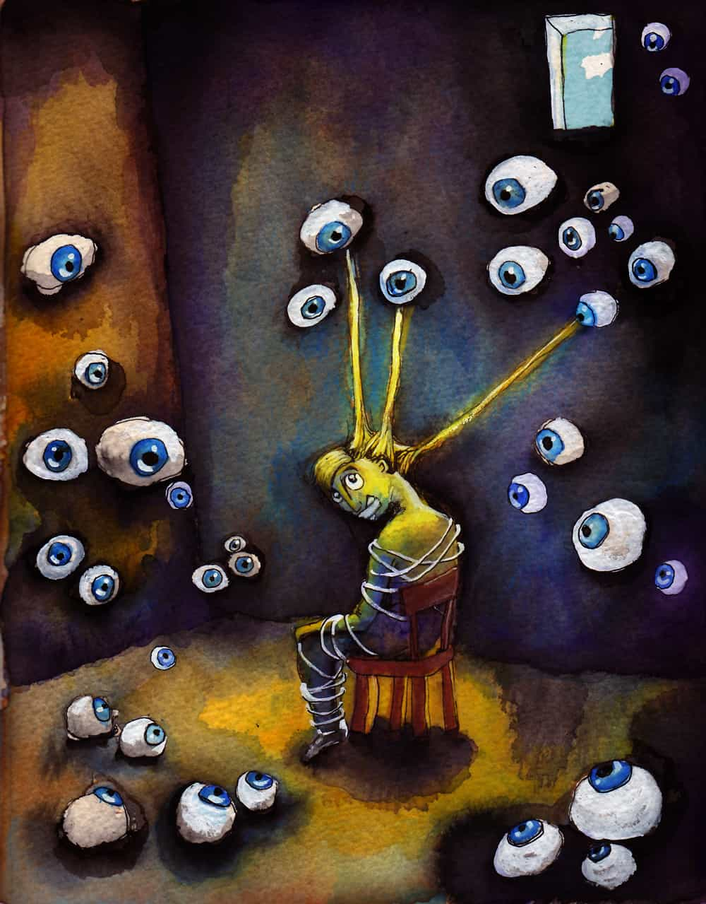

It was shaping up to be a great evening. I had tickets to see a concert with my girlfriend and my best friend, a welcome upgrade from the usual college Saturday of keg parties and greasy latenight pizza. As soon as we got to the crowded venue, though, things began to speed up. Everyone started moshing, the music was unbearably loud, and people were constantly invading my space. Something snapped and I couldn’t be there anymore. I ran out of the club and back to my dorm room, locking myself inside. My friends tried to call me but I turned off my phone and went to sleep. I didn’t leave my room for the rest of the weekend.
It had started during my sophomore year of college. For some reason meeting new people had become terrifying. I had developed irrational fears of calling someone by the wrong name, eating in front of people, not speaking quickly enough in friendly conversation, going grocery shopping, talking on the phone, and looking people in the eye when speaking with them. What was wrong with me?

When I went home for break, I explained the situation to our family doctor and he put me on medication for social anxiety. It was only a low dose of SSRI, but nevertheless I found myself dependent on medication to “even me out.” True, it did prevent the pangs of anxiety that had become a regular occurrence, but it somehow made life’s highs less high. I stayed on the medication or the next two years through the end of college, though not without detriment to other areas of my life. The medicine killed my sex drive. I gained weight because I didn’t have the motivation to work out. And I had to wake up each day knowing that I was somehow “broken” and reliant on Big Pharma to give me a normal life.
After graduation I was able to get a one-in-a-million internship that I knew would be a make-or-break opportunity in a competitive industry. I also knew that forming positive relationships would be the cornerstone of my ability to succeed, and appearing to be an awkward weirdo would kill any chance of achieving my dream. Though my social anxiety was technically being “managed,” the pharmaceuticals regulating my life would prevent me from being the dynamic, creative person I had to be to succeed.
I decided to make a change.
The day before my internship began, I quit my medication and decided to spend the summer combating my anxiety head-on. I was thousands of miles from home with no friends or support network. I barely had any money. I knew that I might fail miserably, but I owed it to myself to fight it head-on before resigning myself to a mediocre life lived in a medicated haze. These are the techniques I used in the intervening three months:
“General life improvement” isn’t a powerful enough reason to keep you dedicated to this arduous process. Unless you want to lead a lonely existence with a solitary job, you have to come to grips that things are broken, and they will not fix themselves. Do you want to talk to prettier girls? Do you want to excel in a job that involves interacting with people? You must understand at the most basic level that none of those things will happen unless you can overcome your anxiety. Articulate the burning desire that your anxiety is preventing you from achieving. Write it down. Put it in your wallet. Say it to yourself in the mirror every morning. Don’t lose sight of your goal.
There is increasing evidence, both circumstantial and scientific, that suggests that a standard high-carb american diet is linked to depression and anxiety. Cut wheat, sugar, dairy, and legumes out of your diet. Eat grass fed meats and get your healthy fats, which are essential for optimum brain functioning.
Exercise has the dual effect of reducing levels of the stress hormone cortisol, and building up your confidence. If you take up an organized sport, especially a martial art, it can help you deal with the adrenaline surges from talking to new people and other anxiety triggers.
Remember the saying that you should do something that scares you every day? That advice sucks. If you have this problem, you must do five things that absolutely terrify you every day. With social anxiety, it may be as simple as walking into your boss’s office for a chat, talking about the weather with the new girl in accounting, or going to the grocery store during peak hours. This is the most painful part of the process, but eventually you will desensitize yourself to the physiological and emotional fight-or-flight response.
This step is similar to cognitive behavioral therapy, a common clinical treatment for anxiety. The root feeling of social anxiety is shame for how other people see you or feel about you. If you trip over the sidewalk, people will laugh for five seconds and then go about their day, forgetting about you as quickly as you entered their life. But someone with social anxiety may agonize over this moment for the rest of their day, allowing an isolated incident to bully their consciousness indefinitely. By attempting to put yourself in someone else’s mind, you can (correctly) convince yourself that nobody really gives a shit about you because they are too busy thinking about themselves and their own problems. In Day Bang, Roosh has an excellent section about visualizing the worst possible scenario to overcome approach anxiety. You must realize that anything that could happen to you is far from your anxiety’s worst case scenario.

That summer away from home was full of pain, joy, hardship, and ultimately victory. It wasn’t easy or pleasant, but applying the strategy outlined above over the long term freed me from slavery to my brain chemistry. Nowadays I have a great job. I am confident enough to approach women during either day or night, have no problem talking with strangers, and feel comfortable in my own skin. Few would describe me as the life of the party, but even as a natural introvert I’m a social guy and can thrive among a variety of crowds.
The anxiety buried deep in the back of my mind will always be a part of me. But the essence of masculinity is taking ownership of situations in your life, and constantly improving at your deficiencies. I have given you the tools. Go out and beat it.
Don’t Miss: Internet Dating Killed My Game